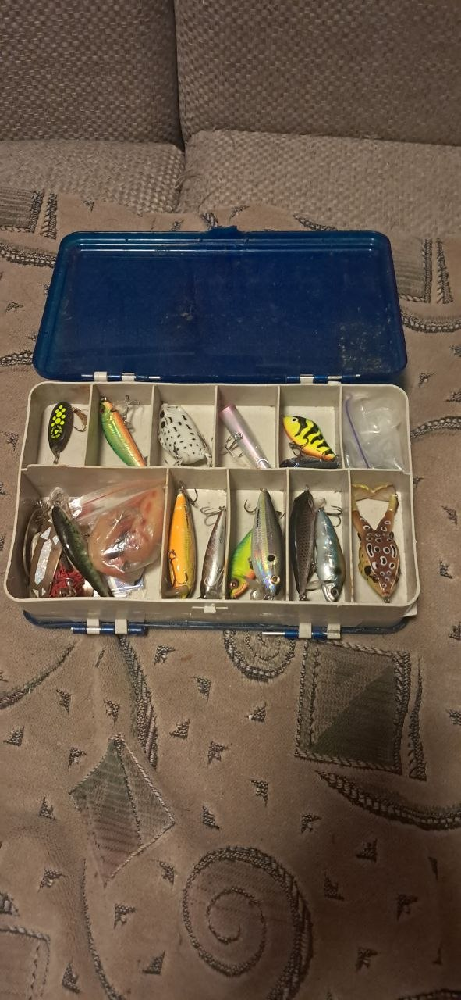

My Proven Tackle Strategy
Matching your presentation to the target fish is key to successful spinning.
Targeted Gear Breakdown
- Pike Tactics (Heavy Spinning Setup)
- Rods: Medium-Heavy action fast tip rods.
- Lures: 110mm-130mm suspending minnow hardbaits.
- Leaders: Mandatory thick fluorocarbon (0.55mm and up).
- Perch Tactics (Ultra-Light Setup)
- Rods: Solid-tip ultra-light rods (1-7g rating).
- Lures: 2-inch to 3-inch edible silicone soft-plastics.
